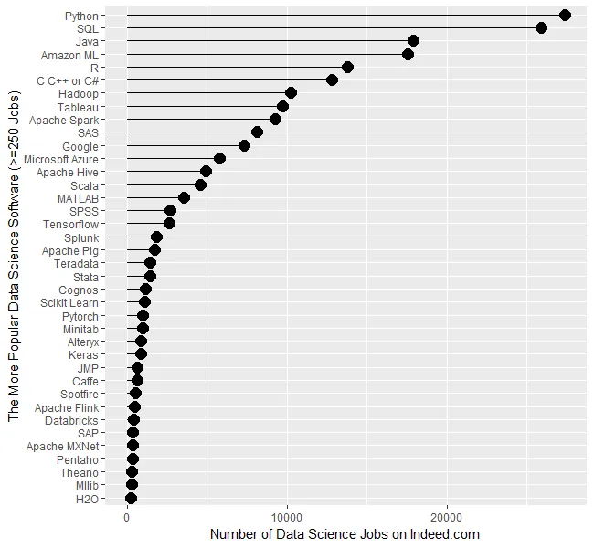

[1] 41|COURSE OVERVIEW
Overview
About me
Dr. Rob Brotherton
Northern Irish
Research: Political psychology / conspiracy beliefs
Textbook
- Learning Statistics with R
- By Danielle Navarro
- Download as a .pdf for free
- learningstatisticswithr.com
- Helpful for seeing how things are done in R
- As well as explaining statistical concepts
Lectures
Panopto
- In-lecture quizzes
- Navigation
- Subtitles
- Also: Class notes Google Doc
Topics
- Basic issues:
- Terminology, variables & measurement
- Descriptive statistics:
- Frequency, central tendency, variability, z-scores
- Inferential statistics:
- Probability, sampling; hypothesis testing
- \(t\)-tests; ANOVA; Correlation & regression
- Logical progression
Exams
- 3 multiple choice exams
- Multiple choice
- 60 minutes
- Only lecture material, not R
- Non-cumulative
- Except inasmuch as later concepts rely on ones introduced earlier
- Some questions will involve sums, but only simple ones you can do on paper
Recitation
R problem sets
- Practical application of stats to data
- Using RStudio Cloud
- Show code; how you worked out answers
- Work on .qmd in RStudio Cloud
- Upload rendered .pdf to Canvas
Grading
- Wrong answers ≠ lower grade
- 0, 1, or 2 points
- 0 = No submission, 1 = Incomplete, 2 = Valid attempt
- Deadline: End of recitation
Final grades
- 50% Exams
- 30% Problem Sets
- 20% Participation
Other stuff
Math
Statistics requires basic math skills
E.g. order of operations
- Parentheses
- Exponents (like squaring/square root)
- Multiplication & division
- Summation
- Addition & subtraction
Math
- Summation
- Symbol \(\Sigma\) (Greek letter Sigma) means add up
- Summation is done after operations in parentheses, squaring, and multiplication or division, but before other addition or subtraction
- E.g… \(X = [2, 4, 7]\)
\(\Sigma X = ?\)
\(\Sigma X + 1 = ?\)
\(\Sigma(X + 1) = ?\)
Math
- Algebra
- Rearranging equations
- E.g.
\[\begin{align}12 &= 7 + X \\ X &= ? \end{align}\]

- Disadvantages
- A little tricky to begin with
- Advantages
- Free
- Can do stuff other stats software can’t
- Reproducible analyses
- Pretty graphs
- Feel like a super cool hacker
- Pirate jokes
- Good for your career

Lastly
- Check Canvas & email regularly
- Let me know about problems
w = 1050
h = w/2
cover = {
const svg = d3.select("#cover-image")
.append("svg")
.attr("width", w)
.attr("height", h)
.style("transform", "scaleY(-1)")
const g = svg.append("g")
g
.selectAll("rect")
.data(data)
.enter()
.append("rect")
.attr("fill", "black")
.attr("x", function(d, i){return 5 + i*(w/10)})
.attr("y", 0)
.attr("height", 0)
.attr("width", w/10 - 10)
.attr("fill", d => d.color)
.transition()
.duration(d => d.duration)
.delay(d => d.delay)
.attr("height", d => d.value * 26)
return svg.node()
}